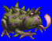
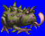
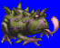
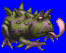

Height: 8 cm - 2 meters Weight: 220 lbs.
Habitat: Marsh Origin: ???
Meaning: English word "toad"
The toad pictured is a large toad. Its entire body is poisonous, but its ears are especially venomous. The poison is primarily to protect the body from bacteria or parasites. In many European fairy tales, one is cursed by being transformed into a toad. Toads mainly prey on insects using their forked tongues, but this feature is often embellished for dramatic purposes when toads are used in games.